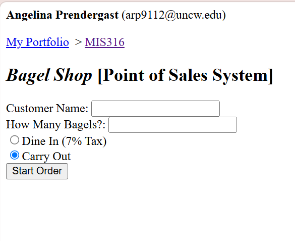
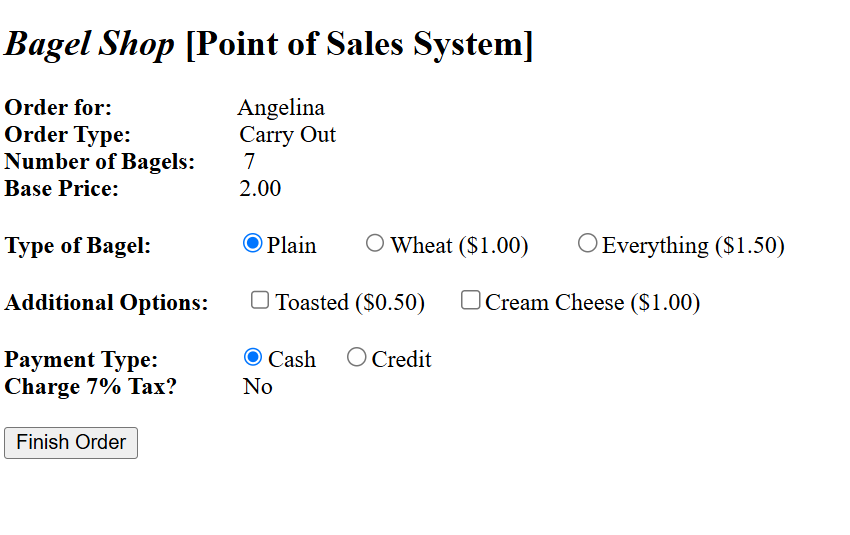
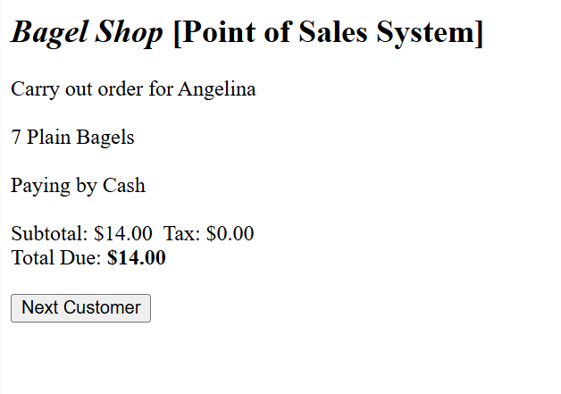

Application Development
Bagel Shop Point-of-Sale System
An ASP.NET Web Forms application that processes customized customer orders and produces a calculated receipt.
Project Overview
This project, created in a Business Application Development course, is an ASP.NET Web Forms point-of-sale application that simulates the ordering process for a bagel shop. Users can enter customer information, customize their order by selecting bagel types and add-ons, choose dine-in or takeout, and receive an automatically generated receipt with calculated subtotals, tax, and totals. The application was designed to strengthen my understanding of C# programming while creating an interactive, user-friendly ordering experience.
Technologies Used
Key Features
The application includes multiple interactive panels that guide users through the ordering process, custom methods that organize the application's functionality, and dynamic calculations based on the customer's selections. Features include customizable bagel options and add-ons, automatic tax and total calculations, user input validation, order summaries, receipt generation, and the ability to reset the application for the next customer. Throughout the project, I focused on creating code that was modular, reusable, and easy to maintain.
What I Learned
This project significantly strengthened my understanding of object-oriented and event-driven programming in C#. I gained experience creating reusable custom methods, passing parameters, returning values, working with loops and conditional statements, and separating business logic from the user interface. I also became more comfortable using ASP.NET Web Forms controls to build interactive applications and learned the importance of organizing code into smaller, reusable methods that improve readability, simplify debugging, and make future updates easier.
Application Gallery
These screenshots show the main stages of the ordering process, from entering customer information to customizing the order and generating the final receipt.

Customer Information
The first screen collects the customer's name, number of bagels, and order type before moving to the customization stage.

Order Customization
Customers can select a bagel type, choose additional options, and specify a payment method before completing the order.

Generated Receipt
The final screen displays an itemized order summary with the customer's selections, subtotal, tax, price per bagel, and total.